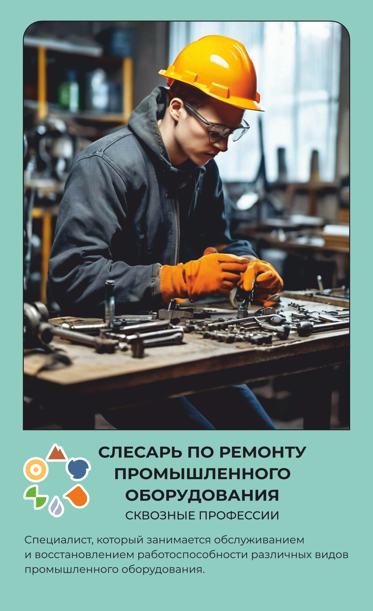

Слесарь по ремонту промышленного оборудования
Чинит заводские станки и механизмы.
Основной вид деятельности
Обеспечивает технические параметры и работоспособность узлов и механизмов, оборудования, агрегатов и машин техническим обслуживанием и ремонтом — в производственном цехе или мастерской.
Что делает на рабочем месте
Слесарь по ремонту промышленного оборудования устраняет поломки станков и другой техники прямо в цехе — сначала находит дефект детали или узла, а затем решает, ремонтировать его на месте или снимать для более серьёзного ремонта в мастерской. Разбирает механизм, обрабатывает детали на верстаке, токарном или фрезерном станке — режет, шлифует, сверлит металл — и снова собирает узел, регулируя его работу. Точность подгонки деталей проверяет штангенциркулем и шабером, а неисправности в электрических цепях оборудования — мультиметром. Собирает детали и элементы в единую конструкцию строго по чертежам и схемам, заменяет изношенные компоненты на новые. Помимо аварийного ремонта, регулярно проводит плановое обслуживание оборудования, чтобы предупредить поломку до того, как она остановит производство. Работает в прочной спецодежде, устойчивой к высокой температуре и влаге, в каске, защитных очках и обуви с металлическим подноском — рабочее место слесаря часто рядом с движущимися механизмами.
Что производит
Металл и металлические изделия их слесарная обработка, изготовление, сборка и ремонт приспособлений, режущего и измерительного инструмента.
Оборудование и инструменты
Спецодежда и СИЗ
одежды
Куртка и брюки / комбинезон / полукомбинезон из прочной и устойчивой к высокой температуре, влаге ткани. Защитные очки, специальная обувь, перчатки, каска, маска, противошумовые наушники
Спецобувь
обуви
Удобные сапоги или ботинки с нескользящей подошвой, надежной шнуровкой, желательно с металлическим подноском и антипрокольной стелькой
Где учиться
15.02.17 Монтаж, техническое обслуживание, эксплуатация и ремонт промышленного оборудования (машиностроение) 15.02.12 Монтаж и эксплуатация промышленного оборудования 15.01.35 Мастер слесарных работ
Где работать
Похожие профессии
Данные — карточка 77 из 160, отрасль «Сквозные профессии». Зарплата — оценочная вилка по региону.